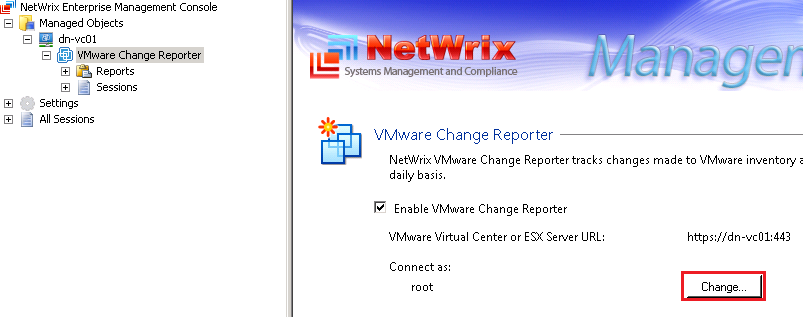
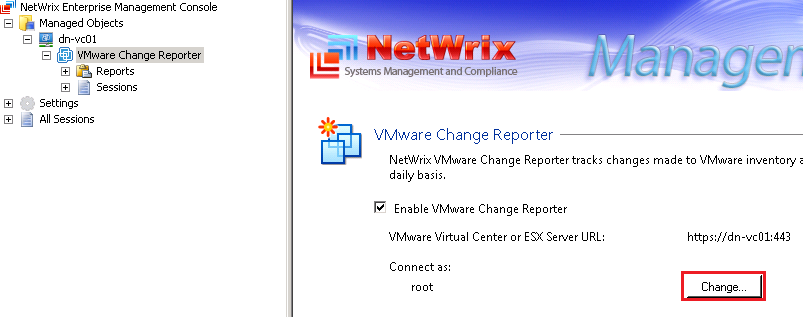

Change analysis completed with error: Error saving current VMware Virtual Center
snapshot: Cannot complete login due to an incorrect user name or password.
Select the Change button to enter in the credentials for the Virtual Center or ESX(i) Server: 
Select the Change button to enter in the credentials for the Virtual Center or ESX(i) Server: 